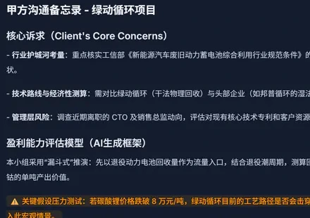

01 · 资料
接入企业资料
接入并整理资料，建立按权限检索的索引。
我们为企业开发销售问答、标书生成、内部知识库和数据查询系统，也提供托管式 AI 服务。项目包括需求评估、开发部署和上线后的维护。

查看完整界面 ↗标注仅解释界面内容；生成内容可能有误，须由人工复核。
智能标书与方案生成 · 初稿耗时
IT 助手 · 常见咨询自动处理
工程与制造、专业服务及更多场景
先了解一项工作如何完成，再把资料、工作流和审核连接起来。
接入并整理资料，建立按权限检索的索引。
Cyano Core 根据当前任务选择相关资料与上下文。
在流程中加入规则校验、来源引用和人工审核。
生成内容可能有误，合同和财务等工作需要明确的审核程序。
曲线使用示意数据，不是内部基准测试结果，也不代表项目性能承诺。
Cyano 的核心成员均有 6 年以上软件开发经验，参与过 AI 模型研发，并曾在世界 500 强企业工作。

企业战略 · 客户合作 · AI 商业化

大模型工程 · 上下文架构 · 系统集成

工程交付 · 上线运维 · 质量保障

需求评估 · 产品设计 · 解决方案